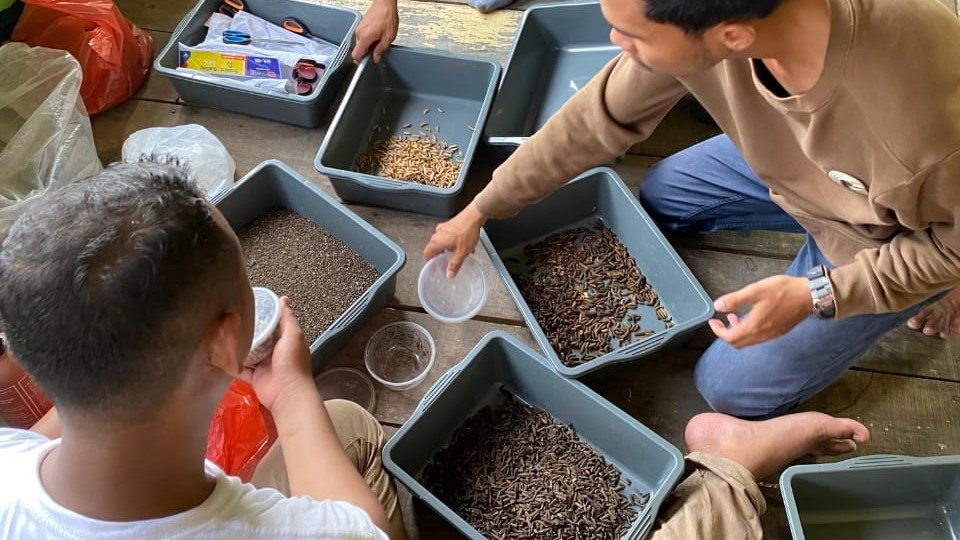
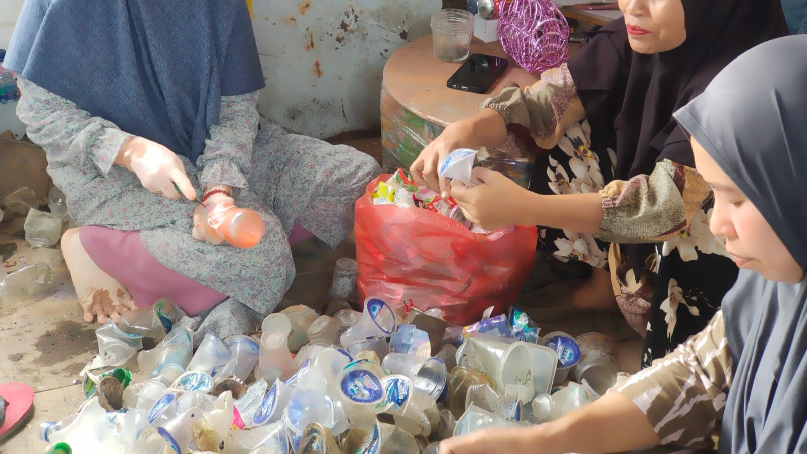
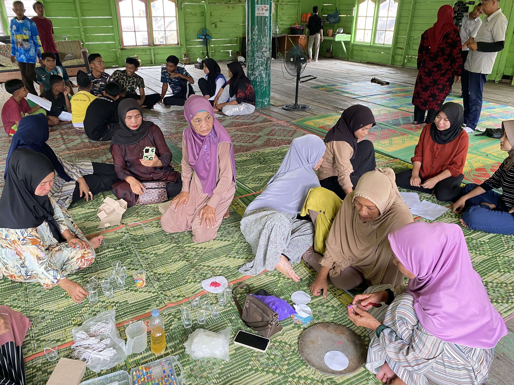
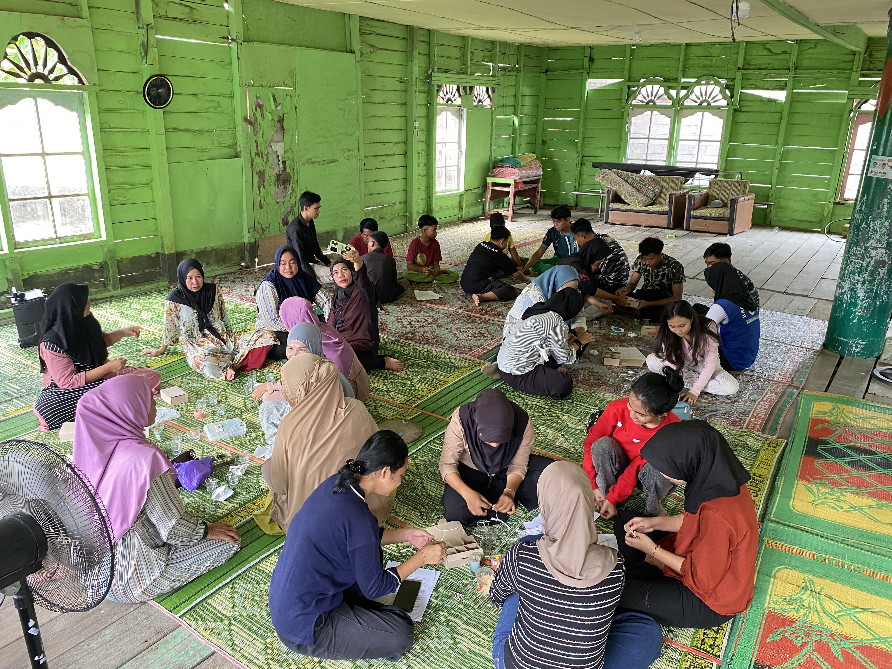
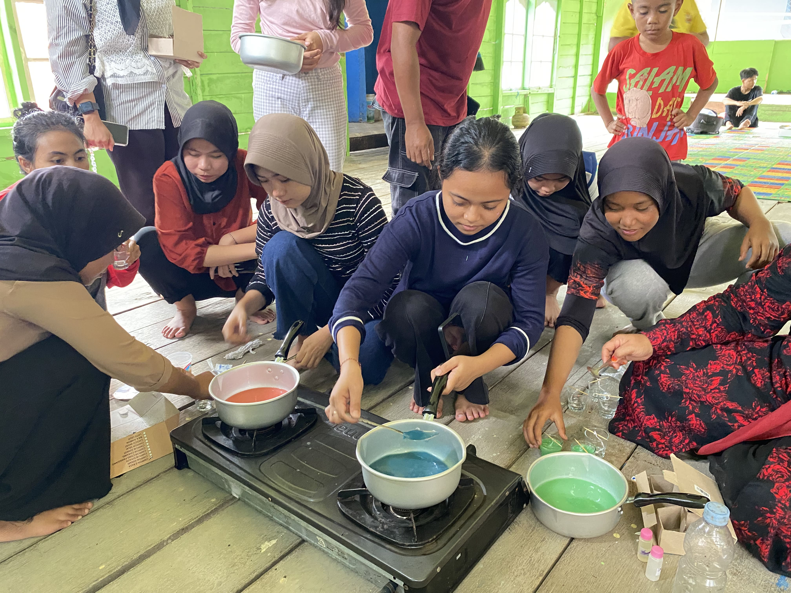
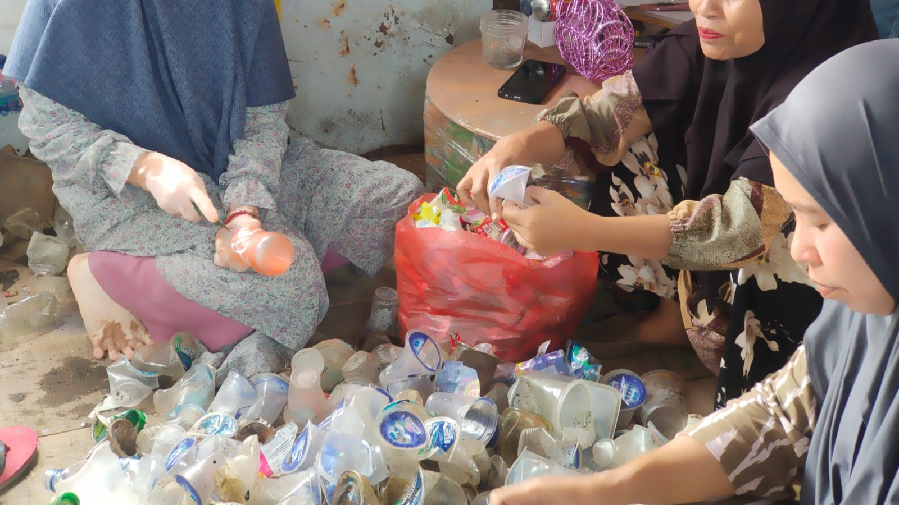
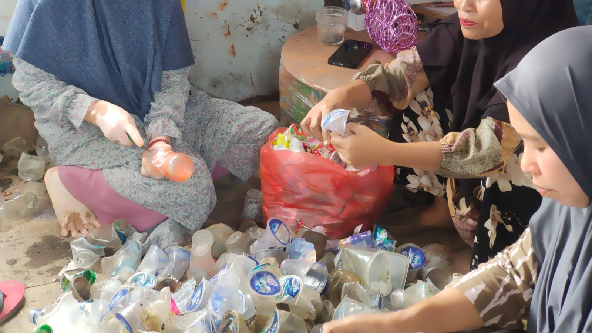

Project KABAYA (Kampung Pesisir Berdaya) dilakukan di kampung Nelayan Sebrang dimana project ini merupakan
pemberdayaan masyarakat pesisir melalui pengelolaan dan pengolahan sampah yang menciptakan circular economy
bagi masyarakat. Project ini didukung dengan dibangunnya Bank Sampah HORAS BAH (Hayuk Olah Sampah Menjadi Berkah) yang
berfokus pada pengelolaan dan pengolahan sampah organik dan anorganik.
Sampah yang menumpuk dilingkungan kampung Nelayan Sebrang diproses menjadi produk yang bernilai ekonomis.
Project ini juga dilakukan sosialisasi dan pelatihan bagi masyarakat guna mengedukasi dan meningkatkan skill
dalam pengolahan sampah.


Project SAMUDERA dilakukan untuk melestarikan ekosistem pesisir melalui penanaman Mangrove guna mencegah abrasi,
melindungi pantai, dan mengurangi emisi karbon. Penanaman Mangrove dilakukan di lahan seluas 12,5 hektar di
Desa Paluh Kurau, Kecamatan Hamparan Perak, Kabupaten Deli Serdang. Project ini dilakukan sebagai wujud nyata
dari komitmen kami dalam melestarikan ekosistem pesisir dan menjaga masa depan lingkungan, khususnya dalam
rangka memperingati hari Maritim Nasional 2024
ELPIJI hadir untuk menumbuhkan kesadaran akan pentingnya pengelolaan sampah di kalangan pelajar sejak usia dini.
Kegiatan ini berkolaborasi dengan Pelindo Multi Terminal dan Ecofriendly Board, kami menghadirkan kegiatan edukasi
di sekolah-sekolah di Kota Medan, mulai dari tingkat SD hingga SMA. Program ini mengajarkan anak-anak cara memilah
sampah dengan benar, serta mengedukasi mereka tentang dampak sampah terhadap lingkungan.
Kegiatan yang kami tawarkan mencakup pelatihan praktis, sosialisasi, serta kompetisi yang mendorong partisipasi aktif
siswa dalam upaya menjaga kebersihan dan kelestarian lingkungan. Dengan melibatkan para siswa, kami berharap dapat
menciptakan generasi yang lebih peduli terhadap lingkungan, serta membentuk kebiasaan baik dalam pengelolaan sampah.
Dalam program ini pula Ecofriendly berkontribusi memberikan tempat sampah pelantik dari daur ulang sampah pelantik.
Proyek BERLIAN bertujuan mengatasi limbah minyak goreng di Kampung Nelayan Seberang melalui
pengelolaan terpadu bersama Bank Sampah HORAS BAH. Kegiatan utamanya meliputi pengumpulan,
pengolahan limbah minyak menjadi produk bermanfaat seperti lilin, serta edukasi kepada masyarakat.
Proyek ini bertujuan mengurangi pencemaran laut, meningkatkan kesadaran masyarakat,
dan memberdayakan ekonomi lokal berbasis ekonomi sirkular. Melalui penguatan Bank Sampah
HORAS BAH, proyek BERLIAN diharapkan menciptakan pengelolaan limbah yang berkelanjutan dan
ramah lingkungan.




 
